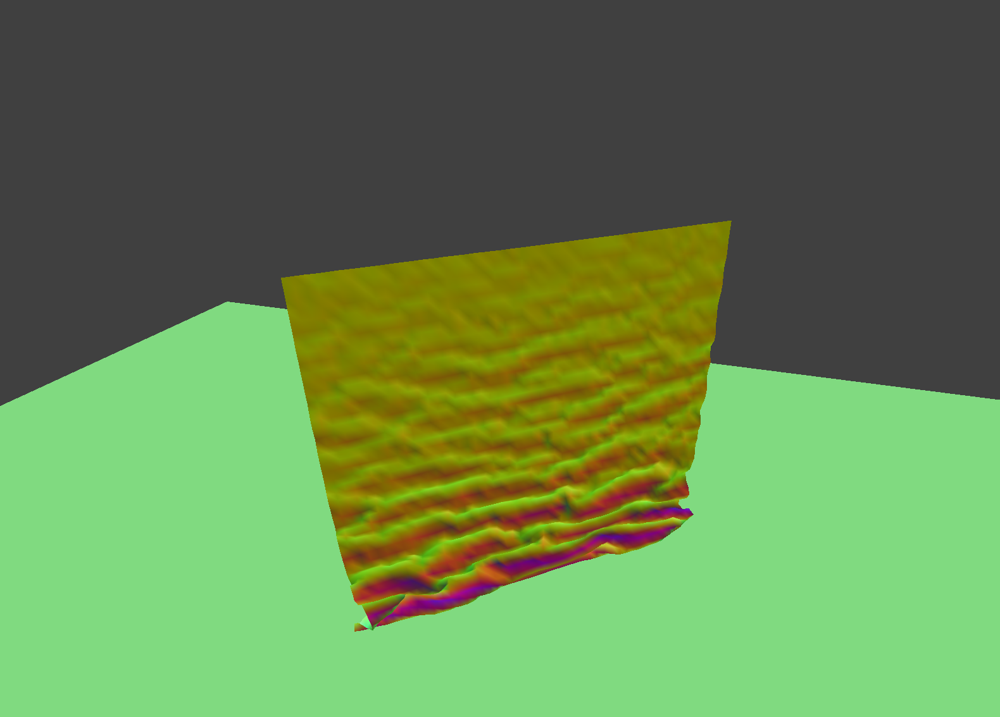

CS184 Project 4
Matthew Tang, Kaitlyn Lee
https://cal-cs184-student.github.io/sp22-project-webpages-kaitlynlee/proj4/index.html
Part 1
In Part 1, we implemented code to set up the masses and springs. We implemented 3 types of constraints: structural, shearing, and bending. The below image shows the top view of the wireframe with all constraints.

These images show what the wireframe looks like (1) without any shearing constraints, (2) with only shearing constraints, and (3) with all constraints.

Part 2
In Part 2, we computed the total force acting on each point mass and used verlet integration to compute new mass positions. We also made sure add a constraint such that the spring's length is at most 10% greater than its rest_length at the end of any time step.
Here is the final resting state of pinned4 and pinned2 respectively.


Setting the ks to be very low makes the cloth fall slower and droop more in its final resting state. There are more random jitters in the resting state. Setting the ks to be high makes the cloth fall faster and settle faster. The final resting state is more taut. (Setting the ks to be ridiculously high will produce a degenerate blob, but we assume that ks is not thaaat high.) The left photo shows a low ks and the right photo shows a high ks.

A low density also creates a similar taut resting state. A high density creates a very droopy resting state. The left photo shows a low density and the right photo shows a high density.
Low damping means it takes longer for the cloth to settle and it will swing back and forth. High damping means the cloth will take a long time to fall down and settle into its resting position as well. The below screenshots (low damping, high damping) were taken before they reached their resting positions.

Part 3
In Part 3, we implemented collisions with planes and spheres.
We can play around with different ks values for the sphere. The smaller the ks value, the more droopy it looks. The cloth conforms more to the surface of the sphere. The higher the ks value, the more taut it looks. The high ks value screenshot shows the cloth being very stiff and not conforming to the shape of the sphere very well. The default ks value is an inbetween of the two extremes.

Here is a screenshot of the cloth lying on the plane at rest.

Part 4




This is a gif of the process-- it doesn't loop, so you may have to refresh to see it again.